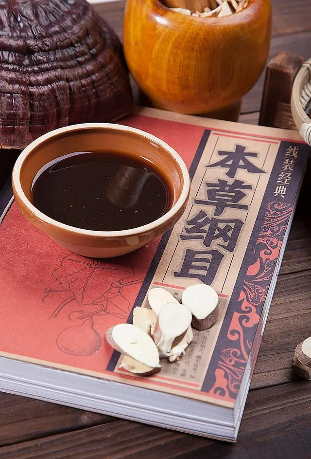

- 
《
》
现代中医
然而现代中医的处境并不容易，中医的原理并不知晓，在市场上被西医抢占生态位，中医学校开设的课程不能做到传承经典与保证学生的就业并举……现代医学存在着种种的问题。现在由人大代表的发言来具体说明。视频来源：https://www.bilibili.com/video/BV1gj411A7xK/
然而现代中医的处境并不容易，中医的原理并不知晓，在市场上被西医抢占生态位，中医学校开设的课程不能做到传承经典与保证学生的就业并举……现代医学存在着种种的问题。现在由人大代表的发言来具体说明。视频来源：https://www.bilibili.com/video/BV1gj411A7xK/